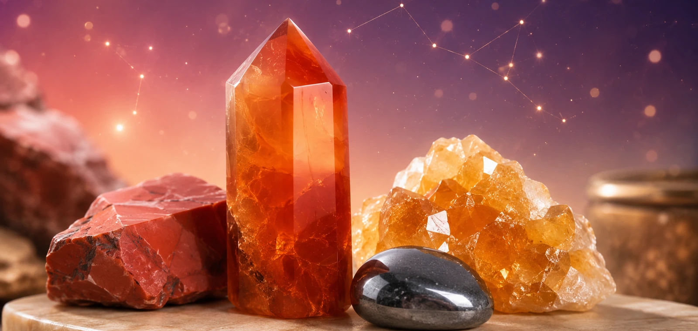
AMarch 21 – April 19 · Fire
Aries
Courage · Action · Bold Energy
- Best for
- Confidence, motivation, bold energy
- Crystals
- Carnelian, Red Jasper, Citrine, Hematite
- Element
- Fire
Astrology Stones
Zodiac crystals are stones commonly chosen to match the energy, personality, element, and intention of each astrological sign. Whether you are drawn to grounding stones, love crystals, protection crystals, or intuition stones, your zodiac sign can be a beautiful starting point for choosing meaningful crystal pieces.
Choose your crystal by zodiac sign, birth month, element, intention, or the energy you want to invite into your daily life.
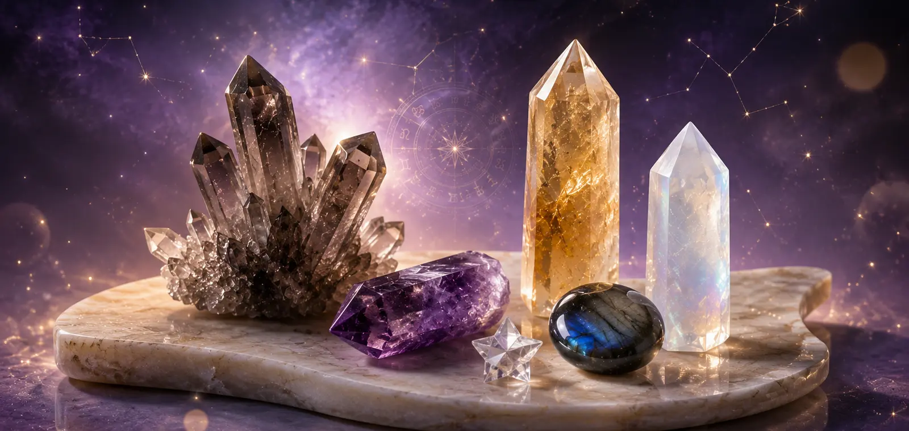
Find Your Sign
12 Zodiac Signs
Use this zodiac crystal guide to match your sign with stones for confidence, calm, intuition, protection, love, abundance, and spiritual growth.

ACourage · Action · Bold Energy
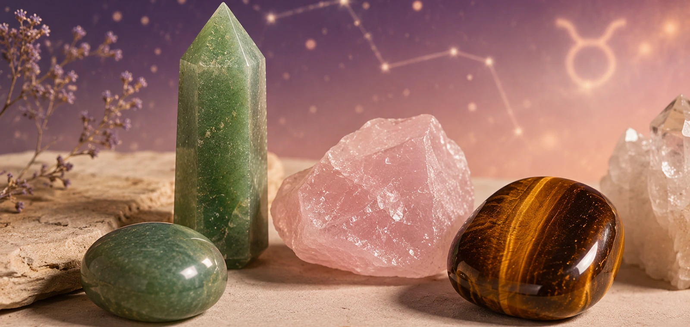
TStability · Abundance · Calm
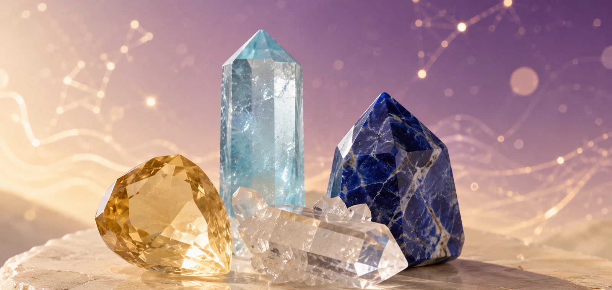
GCommunication · Curiosity · Focus
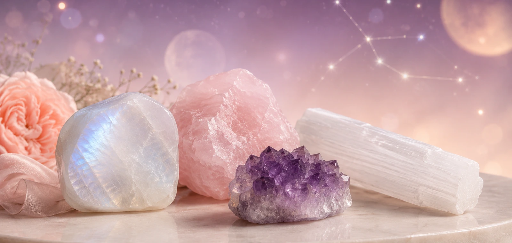
CIntuition · Emotional Care · Comfort
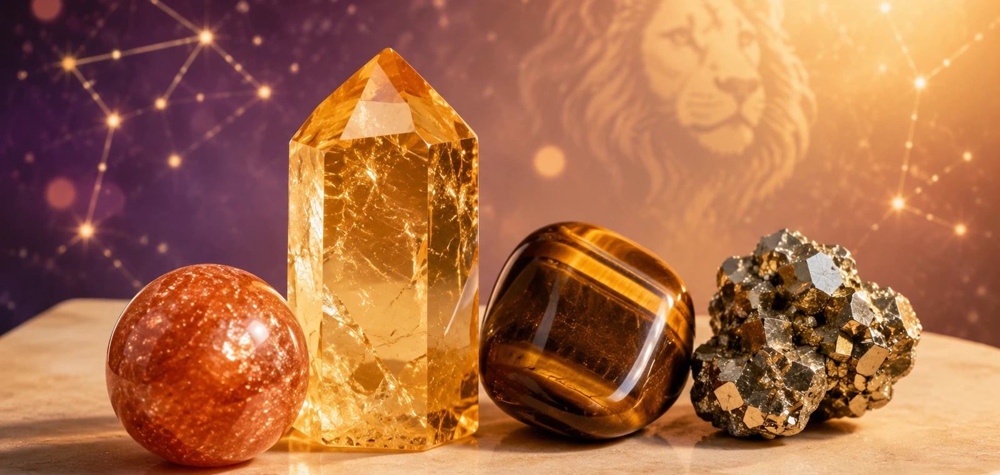
LRadiance · Confidence · Creativity
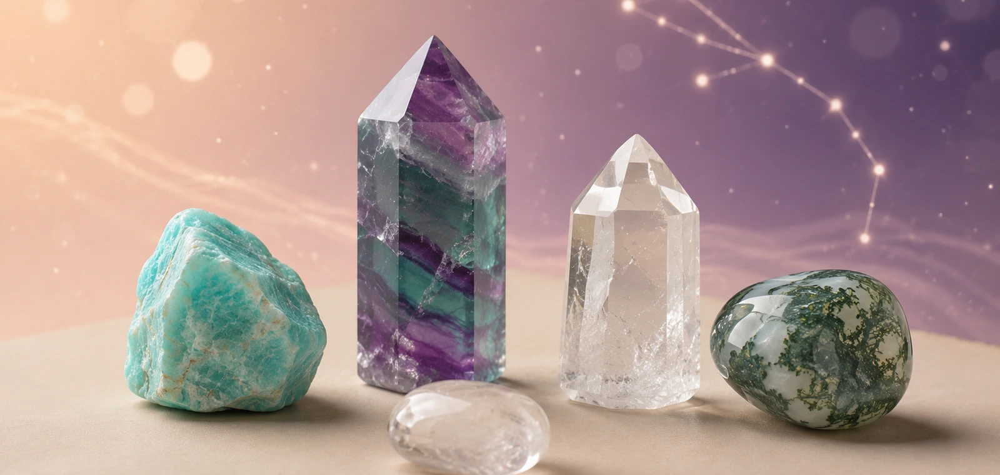
VClarity · Balance · Grounded Calm
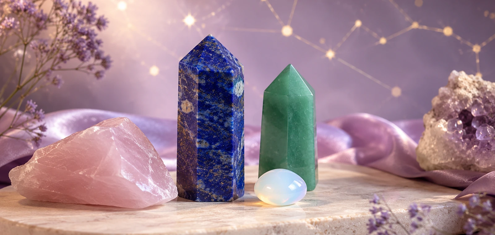
LHarmony · Love · Beauty
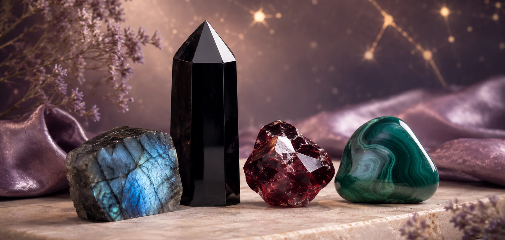
STransformation · Protection · Depth
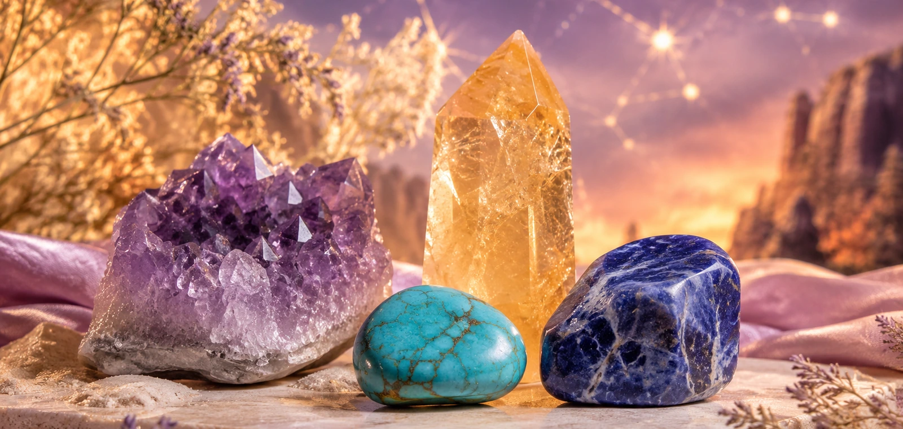
SFreedom · Adventure · Growth
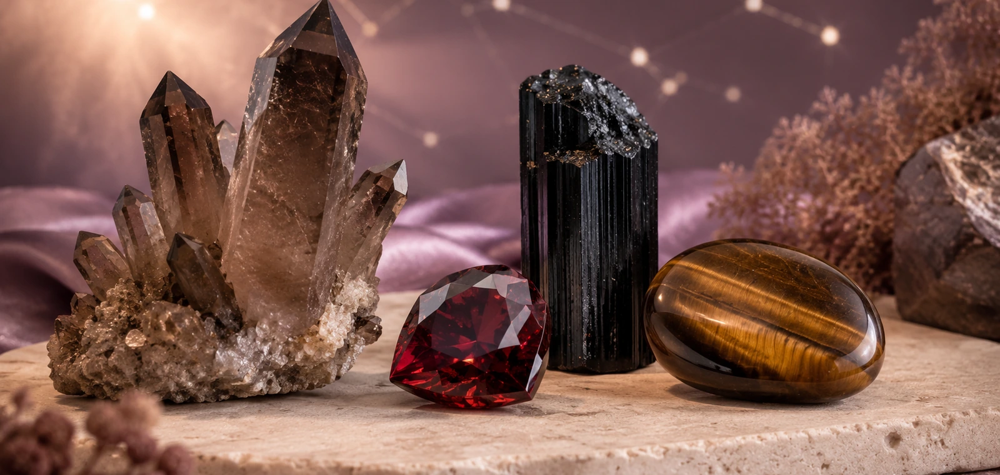
CAmbition · Discipline · Resilience
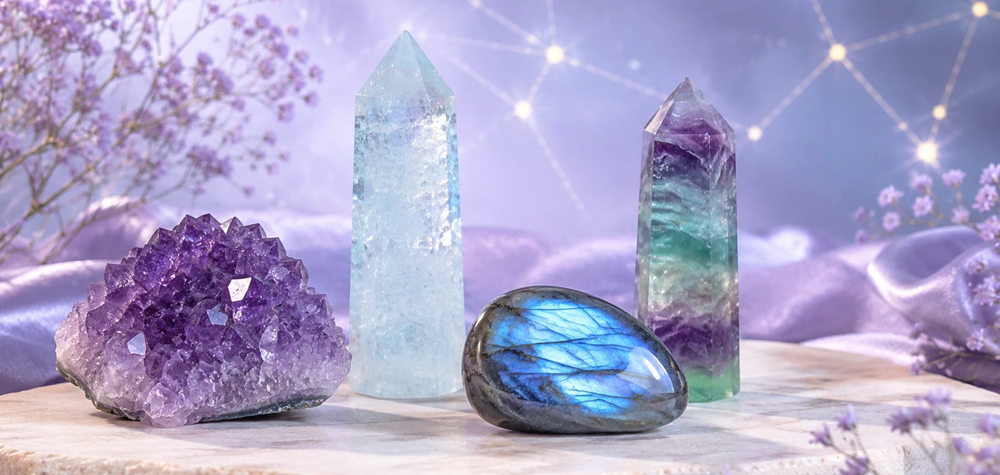
AVision · Innovation · Insight
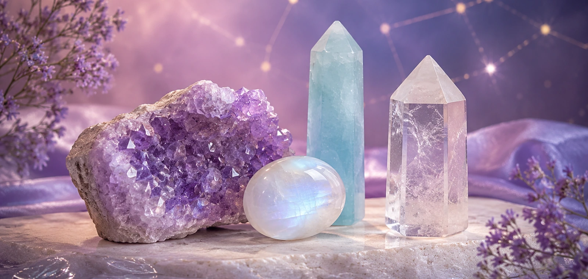
PDreams · Intuition · Spiritual Flow
Shop by Element
Aries, Leo, Sagittarius
Carnelian, Citrine, Sunstone, Red JasperShop Fire Sign CrystalsTaurus, Virgo, Capricorn
Green Aventurine, Smoky Quartz, Moss Agate, Tiger’s EyeShop Earth Sign CrystalsGemini, Libra, Aquarius
Clear Quartz, Aquamarine, Fluorite, Lapis LazuliShop Air Sign CrystalsCancer, Scorpio, Pisces
Moonstone, Amethyst, Obsidian, LabradoriteShop Water Sign CrystalsBeginner Friendly
Start with your zodiac sign and explore the crystals traditionally connected with its element and energy.
If you want protection, love, clarity, abundance, or confidence, choose a stone that matches your current goal.
Fire signs may enjoy red and golden stones, while water signs often connect with blue, purple, and moonlit crystals.
Bracelets are easy to wear daily, towers are beautiful for display, and crystal sets are perfect for gifting.
Wholesale & Private Label
Build your own zodiac crystal collection with bracelets, towers, tumbled stones, gift boxes, astrology cards, and private label packaging.
FAQ
The best crystal depends on your zodiac sign, element, and personal intention. Fire signs may enjoy confidence stones like Carnelian or Citrine, while water signs may connect with Moonstone, Amethyst, or Labradorite.
Many people wear zodiac crystal bracelets or keep zodiac stones nearby as a daily reminder of their intention and personal energy.
Not exactly. Birthstones are usually linked to birth months, while zodiac crystals are chosen based on astrological signs, elements, traits, and energy intentions.
A zodiac crystal set usually includes several stones selected for one zodiac sign, often paired with a card explaining the sign’s energy and crystal meanings.